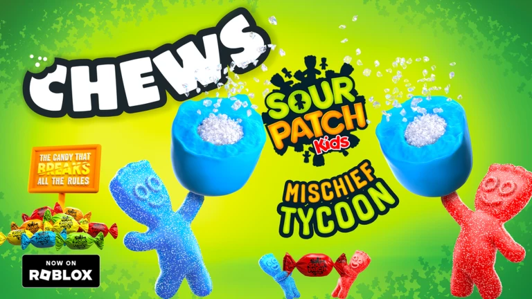
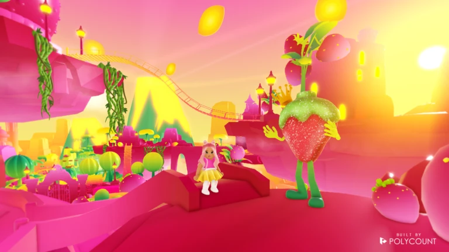
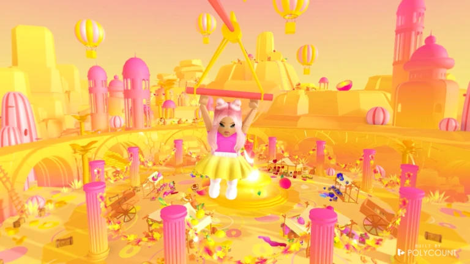

Overview
Project summary
I assisted with programming, game design, and UI implementation for a branded Sour Patch Kids Roblox experience.

Assistant Programmer
Branded Roblox tycoon work covering interactables, UGC group interaction mechanics, Brand Lift Study data collection, and UI implementation support.
Overview
I assisted with programming, game design, and UI implementation for a branded Sour Patch Kids Roblox experience.
Systems
Programmed interactables including catapults, ziplines, grappling hooks, and related tycoon mechanics.
Built a large central button that multiple players stand on together to press down and earn free UGC.
Stored survey responses in DataStores and converted responses to CSV for brand reporting.
Assisted UI artists by bringing UI assets into Roblox Studio.
Media
Media example from Sour Patch Kids Mischief Tycoon.

Media example from Sour Patch Kids Mischief Tycoon.

Media example from Sour Patch Kids Mischief Tycoon.